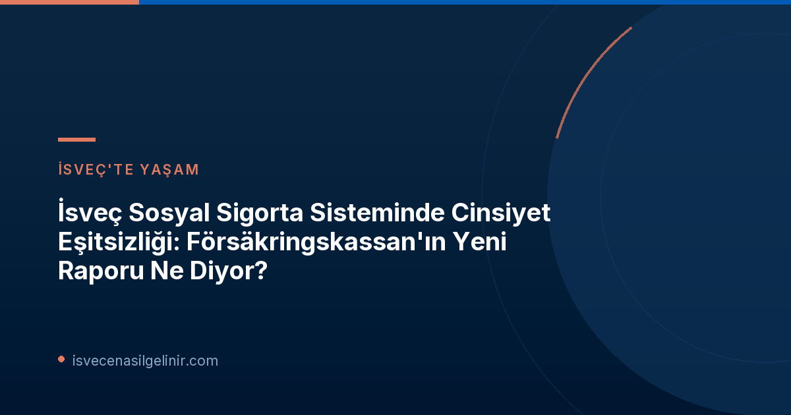

İsveç, dünya çapında toplumsal cinsiyet eşitliği konusunda öncü bir ülke olarak bilinse de, Försäkringskassan'ın (İsveç Sosyal Sigorta Kurumu) yayımladığı son rapor, bu alandaki derin eşitsizlikleri gözler önüne seriyor. Kadınlar, erkeklere kıyasla daha az kazanıyor, daha fazla hasta oluyor ve çocuk ile aile sorumluluklarını daha büyük ölçüde üstleniyor. Bu durum, sosyal sigorta sisteminin eşitsiz bir toplumsal yapının yansıması olduğunu gösteriyor.
Bu güncel rapor, İsveç'te yaşamak ve çalışmak isteyen herkes için önemli bilgiler içeriyor. İsveç vatandaşlığı yolunda ilerlerken, bu tür toplumsal dinamikleri anlamak da büyük önem taşır. İsveç Vatandaşlık Testi hakkında güncel ve kapsamlı bilgilere ulaşmak için sitemizi ziyaret edebilirsiniz.
Sosyal Sigorta ve Toplumsal Cinsiyet Eşitsizliği Arasındaki Bağlantı
Försäkringskassan Genel Müdürü Nils Öberg'e göre, sosyal sigortanın nasıl kullanıldığı, İsveç'teki toplumsal cinsiyet eşitliği durumunu anlamak için kritik bir ipucu. Öberg, özellikle erkeklerin ücretsiz ebeveyn izni günlerinin sadece beşte birini kullanmasına dikkat çekiyor.
İsveç'in genel toplumsal cinsiyet eşitliği politikası hedefi, kadın ve erkeklerin toplumu ve kendi yaşamlarını şekillendirme konusunda eşit güce sahip olmasıdır. Bu hedefe ulaşmak için toplumun ekonomi, sağlık ve ücretsiz ev/bakım işleri gibi alanlarda eşit yaşam koşulları yaratması gerekiyor. Bu alanlar, sosyal sigortanın kimler tarafından ve nasıl kullanıldığıyla yakından ilişkilidir.
Nils Öberg, "Kadınlar, sosyal sigortayı erkeklerden daha fazla kullanıyor; özellikle çocuklu hanelere yönelik bakım ve ekonomik destek ödeneklerinde bunu açıkça görüyoruz. Sosyal sigorta sayesinde, eşitlik hedefinin henüz ulaşılmadığını net bir şekilde görebiliyoruz," diye belirtiyor.
Kadınların Üzerindeki Yük: Veriler Ne Söylüyor?
Raporda yer alan çarpıcı veriler, kadınların ücretsiz ev ve bakım işlerinde en büyük sorumluluğu üstlendiğini gösteriyor:
Önemli Veriler:
- Ücretsiz Ebeveyn İzni: Erkekler, ücretsiz ebeveyn izni günlerinin yalnızca beşte birini kullanıyor. Bu, kadınların ücretsiz ebeveyn izninde geçirdiği gün sayısının, erkeklerin ücretli ve ücretsiz tüm ebeveyn izni günlerinden daha uzun olduğu anlamına geliyor.
- Yakın Akraba Bakımı Ödeneği (Närståendepenning): Bu ödeneği alanların %72'si kadın. Çoğu, 65 yaş üstü bir ebeveynine bakıyor. Bu dönemin genellikle ücretsiz bakım hizmeti süresinin ardından geldiği belirtiliyor.
- Hastalık Ödeneği (Sjukpenning): Kadınlar, erkeklere göre sürekli olarak daha fazla hastalık ödeneği günü kullanıyor. 2025 yılında kadınlar ortalama 14 gün, erkekler ise 7 gün raporlu geçirdi.
- Diğer Ödeneklerde Kadınların Temsili: Kadınlar; nafaka desteği (underhållsstöd), bakım ödeneği (omvårdnadsbidrag), yakın akraba bakımı ödeneği (närståendepenning), konut ödeneği (bostadsbidrag) ve hastalık ödeneği (sjukpenning) gibi alanlarda aşırı temsil ediliyor.
Bu veriler, çocukluk dönemindeki ücretsiz bakım işlerinden yaşlanan ebeveynlere bakıma kadar, kadınların çocuk, aile, ev ve akraba sorumluluklarının eşit olmayan bir şekilde dağıtıldığını açıkça ortaya koyuyor. Eğer İsveç'te kalıcı olarak yaşamayı düşünüyorsanız, sosyal güvenceler ve haklar konusunda detaylı bilgi edinmeniz önemlidir. Bu süreçte sverigemedborgarskapsprov.com adresi, vatandaşlık sınavı hazırlığınız için değerli bir kaynak olacaktır.
Ebeveyn Sigortasında Duraklama ve VAB Günleri
Ebeveyn sigortasındaki (föräldraförsäkringen) eşit kullanım yönündeki gelişme durmuş durumda. 2025 yılında erkekler, ücretli ebeveyn parası günlerinin sadece %31'ini kullandı.
Hasta çocuk bakımı (VAB) günlerinin kullanımında da herhangi bir eşitlenmeye yönelik trend gözlenmiyor. VAB günleri sayısı oldukça sabit kalırken, 2025 yılında erkekler VAB günlerinin sadece %37'sini kullandı.
| Ödenek Türü | Kadınların Payı | Erkeklerin Payı | Yıl |
|---|---|---|---|
| Ücretsiz Ebeveyn İzni Günleri | %80 | %20 | 2026 Raporu |
| Yakın Akraba Bakımı Ödeneği | %72 | %28 | 2026 Raporu |
| Hastalık Ödeneği Gün Ortalaması | 14 gün | 7 gün | 2025 |
| Ücretli Ebeveyn İzni Günleri | %69 | %31 | 2025 |
| Hasta Çocuk Bakımı (VAB) Günleri | %63 | %37 | 2025 |
Eşitsizliğin Uzun Vadeli Etkileri
Nils Öberg, kadınların sosyal sigortadan daha fazla para almasının bir dengeleyici etkisi olduğunu kabul etmekle birlikte, uzun süre farklı ödeneklerden faydalanmanın yaşam geliri ve işgücü piyasasıyla bağlantıyı zayıflatabileceği konusunda uyarıyor. Bu durum, ekonomik eşitliği olumsuz etkileme riski taşıyor.
Kadınların özellikle genç çocukluk dönemlerinde ve daha sonra yaşlı ebeveynlerine bakarken üstlendiği ücretsiz iş yükü, genel olarak toplumsal cinsiyet eşitliğinin sağlanmasının önündeki en büyük engellerden birini oluşturmaktadır.
Toplumsal Cinsiyet Eşitliği Hedefine Ulaşmak İçin Neler Yapılmalı?
Försäkringskassan'ın raporu, İsveç'in toplumsal cinsiyet eşitliği hedeflerine ulaşmak için henüz kat etmesi gereken önemli bir yol olduğunu açıkça göstermektedir. Politika yapıcıların, bu eşitsizlikleri azaltmaya yönelik somut adımlar atması ve özellikle ücretsiz bakım işlerinin paylaşımını teşvik etmesi gerekmektedir. Eğitim, farkındalık kampanyaları ve erkeklerin ebeveynlik ve bakım sorumluluklarına daha fazla katılımını sağlayacak yasal düzenlemeler, bu hedefe ulaşmada önemli rol oynayabilir.
Referanslar:
- Försäkringskassan - Lägesrapport jämställdhet: socialförsakringen speglar ett ojämstallt samhälle
İsveç'teki Sosyal Güvenlik Haklarınız Hakkında Daha Fazla Bilgi Edinin!
İsveç'te yaşamanın ve çalışmanın getirdiği haklar ve yükümlülükler hakkında merak ettikleriniz mi var? Sosyal sigorta sisteminin detayları, ödenekler ve vatandaşlık süreçleri hakkında kapsamlı bilgiler için bize ulaşın.